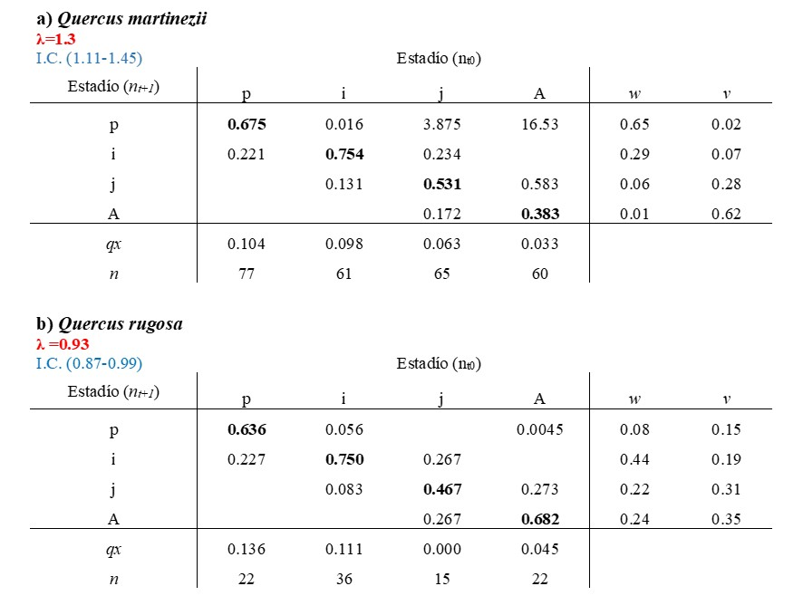
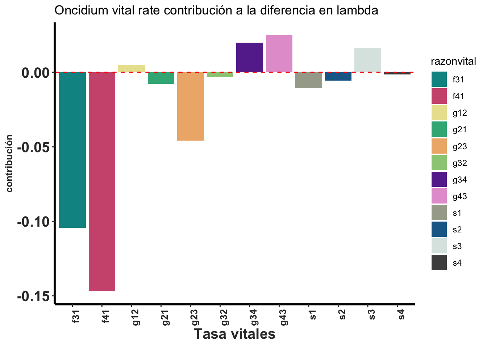
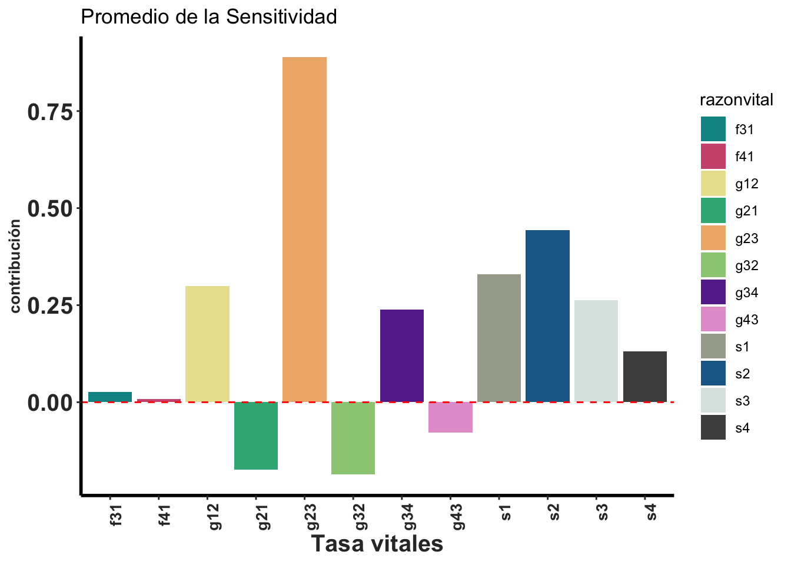
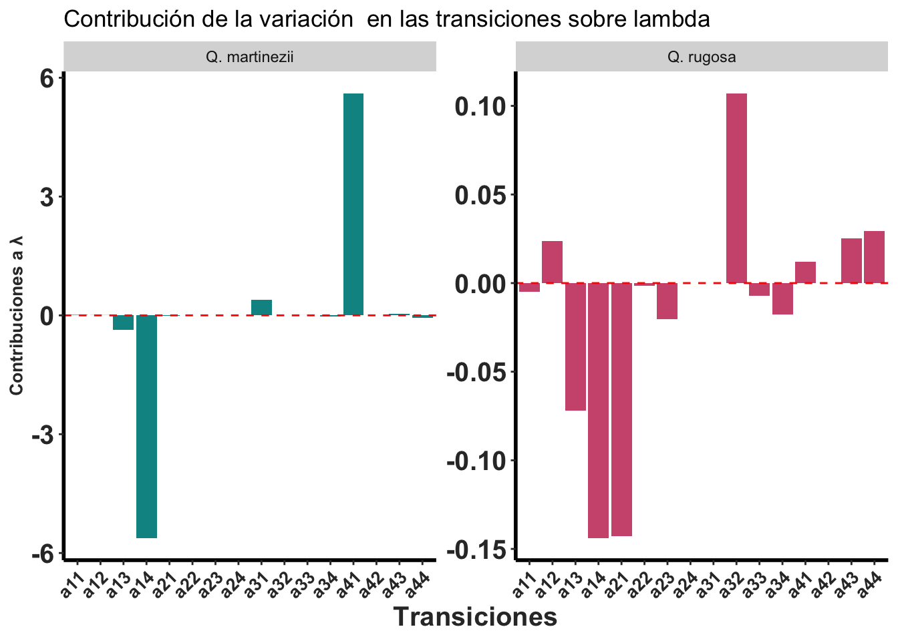
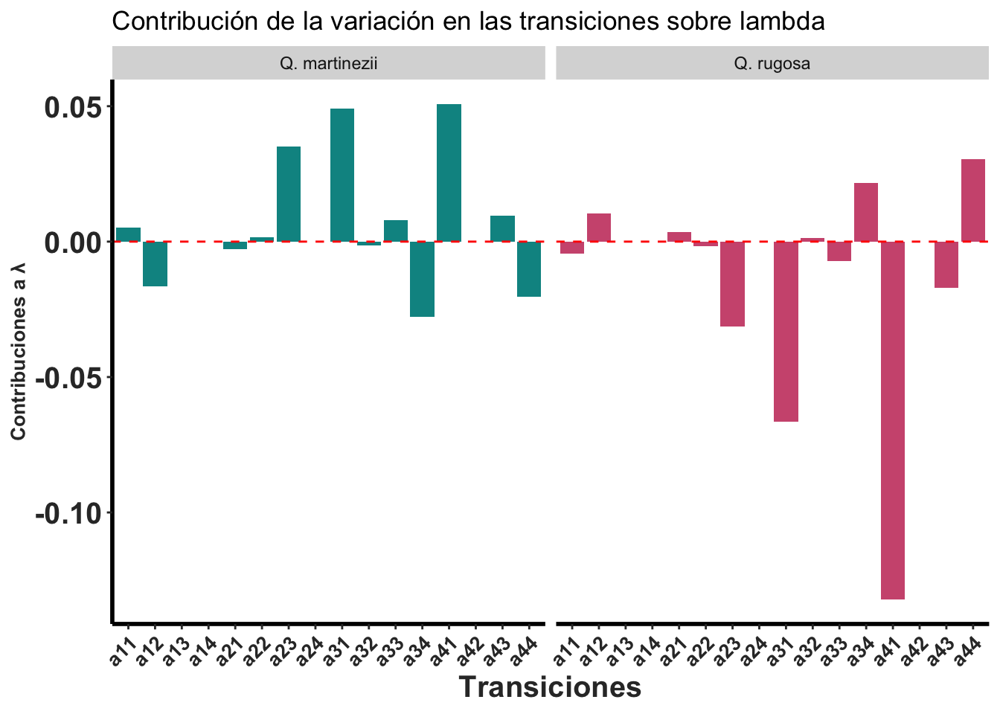

Code
library(tidyverse)
library(gt)
library(Rage)
library(DiagrammeR)
library(popbio)
library(popdemo)por : Adriana Ramírez-Martínez y Demetria Mondragón
library(tidyverse)
library(gt)
library(Rage)
library(DiagrammeR)
library(popbio)
library(popdemo)La variación en los valores estimados de los parámetros de la matriz son inherentes a la biología. Esa variación puede ser consecuencia de múltiples factores individuales y/o de combinaciones, incluyendo efectos de tiempo, espaciales, genéticos, de tamaño de muestra y por su puesto suerte (Hernández et al., 2024). La variación en los parámetros de la historia de vida de una especie se pueden evaluar a diferentes niveles: genético, demográfico, espacial o temporal. En ecología la variación es la norma ¿Cuál es esta variación? ¿en otra palabras qué es lo que varía? y ¿cómo los individuos responden a las variables bióticas y abióticas? son aspectos importantes para determinar la ecología, evolución y conservación de las especies. La causa de la variación en una población se puede resumir en tres componentes principales: la genética, el efecto del ambiente y la interacción entre ambiente y genética (plasticidad fenotípica) (Sun et al., 2019; Hastings et al., 2021). En general se asume que el tamaño de muestra es lo suficientemente grande para no ser la causa de la variación, pero dentro de un contexto de dinámica poblacional las condiciones en las que se encuentran los individuos en las poblaciones varían, ya sea durante tratamientos manipulados, entre localidades o periodos de tiempo, y por consecuencia los datos que colectamos con diferencias en espacio/tiempo también varían y pudieran tener efecto sobre la matriz de proyección poblacional \(matA\). Por tanto, las entradas (los parámetros) de esa matriz A variarán en tiempo/espacio o experimento y esto tendría un impacto sobre la tasa de crecimiento poblacional \(\lambda\) y en los estimados de dispersión (Intervalo de confianza o credibilidad); (Caswell, 1989a, 2010).
Tomando en cuenta lo anterior un Experimento de Respuesta de Tabla de Vida (ERTV) conocido también como Life Table Response Experiment (LTRE, por sus siglas en inglés) descompone la diferencia o varianza en λ entre múltiples poblaciones o tiempo dentro de las contribuciones de los elementos de la matriz y sus interacciones (Caswell, 1989b). Entonces al realizar este análisis podemos tener una apreciación de cómo los cambios en la matriz de datos recolectados en diferentes tiempos y espacio impactan las tasas vitales y a su vez que causan cambios en el crecimiento intrínseco \(\lambda\) y otros parámetros poblacionales (Caswell, 1989b, 2010).
Desde la aplicación del primer ERTV por (Birch, 1953) en su estudio sobre el efecto de la temperatura, humedad y el alimento sobre tres especies de escarabajos de harina, las aplicaciones de estos análisis han sido variadas con diversos fines en las últimas dos décadas (Caswell, 1989b, 2010). Tanto en diseños fijos en los que se manipulan uno o más factores, como en diseños aleatorios en los que se analizan parámetros demográficos en condiciones naturales no manipuladas a lo largo del tiempo o del espacio (Horvitz, Schemske & Caswell, 1997; Teitel, Klimowski & Campbell, 2016). Los diseños fijos se han utilizado en poblaciones de animales para investigar las consecuencias demográficas de la exposición a contaminantes, la manipulación del alimento o la manipulación de la densidad poblacional (Levin et al., 1996; Hansen, Stenseth & Henttonen, 1999; Oli, Slade & Dobson, 2001). En plantas, los análisis ERTV se han utilizado para evaluar las consecuencias demográficas de la disponibilidad de polinizadores o de la herbívora, competencia, efectos en intensidades de cosecha y de fenómenos naturales e inducidos por el humano (Miriti, Joseph Wright & Howe, 2001; Garcı́a & Ehrlén, 2002; Nordbakken, Rydgren & Økland, 2004; Mondragón, 2009; Davison et al., 2010; Gaoue & Ticktin, 2010; Schmidt et al., 2011; Jacquemyn et al., 2012; Hart-Fredeluces, Ticktin & Lake, 2021).
Desde la aplicación del primer ERTV por (Birch, 1953) en su estudio sobre el efecto de la temperatura, humedad y el alimento sobre tres especies de escarabajos de harina, las aplicaciones de estos análisis han sido variadas con diversos fines en las últimas dos décadas (Caswell, 1989b, 2010). Tanto en diseños fijos en los que se manipulan uno o más factores, como en diseños aleatorios en los que se analizan parámetros demográficos en condiciones naturales no manipuladas a lo largo del tiempo o del espacio (Horvitz, Schemske & Caswell, 1997; Teitel, Klimowski & Campbell, 2016). Los diseños fijos se han utilizado en poblaciones de animales para investigar las consecuencias demográficas de la exposición a contaminantes, la manipulación del alimento o la manipulación de la densidad poblacional (Levin et al., 1996; Hansen, Stenseth & Henttonen, 1999; Oli, Slade & Dobson, 2001). En plantas, los análisis ERTV se han utilizado para evaluar las consecuencias demográficas de la disponibilidad de polinizadores o de la herbívora, competencia, efectos en intensidades de cosecha y de fenómenos naturales e inducidos por el humano (Miriti, Joseph Wright & Howe, 2001; Garcı́a & Ehrlén, 2002; Nordbakken, Rydgren & Økland, 2004; Mondragón, 2009; Davison et al., 2010; Gaoue & Ticktin, 2010; Schmidt et al., 2011; Jacquemyn et al., 2012; Hart-Fredeluces, Ticktin & Lake, 2021).
Los métodos para calcular los ERTV están constantemente actualizándose y de acuerdo con (Hernández et al., 2023) existen 186 análisis de ERTV para 75 especies de animales y 1487 para 200 especies de plantas. Aunque en este trabajo no utilizamos la metodología expuesta por dichos autores mostramos una forma práctica de la aplicación de este análisis.
A diferencia de la elasticidad, el cual es un tipo de análisis de perturbación que examina cuánto cambiaría el crecimiento de la población si se cambiaran una de las entradas de la matriz comparando múltiples matriz, el análisis ERTV examina cuánto cambió hay en \(\lambda\) en función de la variación observada en las entradas de la matriz (Caswell, 1989a, 2010; Horvitz, Schemske & Caswell, 1997); y por consecuencia es un análisis que toma en cuenta el cambio de las variaciones individualmente registradas en matrices en diferentes poblaciones/ tiempo / experimentos, etc. (Caswell, 2010). Nota que ERTV es una herramienta suplementaria para evaluar el efecto de perturbaciones como los de elasticidad (Caswell, 1989b), dinámica de transiciones (Stott, Townley & Hodgson, 2011) y funciones de transferencias (Stott, Hodgson & Townley, 2012) y no un reemplazos. Cada una de estas herramientas tiene un propósito y una interpretación diferente con sus supuestos.
Para ejemplificar el cálculo de los ERTV utilizaremos los datos recabados por Ramírez-Martínez colectados de a 2017-2018 para la orquídea epífita Oncidium brachyandrum Lindl. en un bosque de encino estacional en Oaxaca, México (Ramı́rez Martı́nez, 2021). La pregunta principal del estudio era saber qué tasas vitales estaban ligadas a las variaciones en los valores de λ de poblaciones de O. brachyandrum creciendo sobre dos hospederos Quercus martinezii C.H.Mull. y Q. rugosa Née. Usando el método ERTV se pudo evaluar el efecto que tiene la variación observada en los parámetros de las matrices en función de las especies de hospedero en los que se encontraban creciendo.
Como el ERTV es una forma de análisis retrospectivo y es análogo al ANOVA (porque cuantifica los efectos observados de los elementos individuales de matriz sobre la variación observada en λ, en contraposición a los efectos esperados) se requiere de un valor de referencia para realizar las comparaciones, por lo que se toma la matriz con el valor más alto de λ como valor de referencia (Caswell, 2010; Timsina et al., 2021).
A continuación, se muestran dos matrices de tipo Lefkovitch (matrices construidas con base en estadíos) para las poblaciones de O. brachyandrum y sus valores respectivos de λ en los dos hospederos, A) Q. martinezii (λ=1.3; IC: 1.11-1.45) y B) Q. rugosa (λ=0.98; IC: 0.87-0.99). El valor de λ fue mayor en Q. martinezii por lo que la matriz de esta especie fue la matriz de referencia para calcular los ERTV.
A)
| Plántula | Infantil | Juvenil | Adulto | |
|---|---|---|---|---|
| Plántula | 0.68 | 0.02 | 3.88 | 16.53 |
| Infantil | 0.23 | 0.75 | 0.23 | 0 |
| Juvenil | 0 | 0.13 | 0.53 | 0.58 |
| Adulto | 0 | 0 | 0.17 | 0.38 |
B)
| Plántula | Infantil | Juvenil | Adulto | |
|---|---|---|---|---|
| Plántula | 0.64 | 0.06 | 0 | 0.005 |
| Infantil | 0.23 | 0.75 | 0.27 | 0 |
| Juvenil | 0 | 0.08 | 0.47 | 0.27 |
| Adulto | 0 | 0 | 0.27 | 0.68 |
Cuadro 1. Matrices de proyección poblaciones de dos poblaciones de Oncidiun brachyandrum creciendo sobre Quercus martinezii y Q. rugosa. Los valores de λ (intervalos de confianza ± 95%) son mostrados en la parte superior izquierda de cada matriz, qx, mortalidad por estadío; w, categorías estables de tamaño por estadío; valor reproductivo por estadío, n = el tamaño de muestra en el tiempo cero (el primer muestreo). p: plántula, i: infantil, j: juvenil, A; adulto (Ramı́rez Martı́nez, 2021). Los valores en negritas son los valores que representan la proporción de individuos que se queda en ese estadio.

Primeramente se creó el ciclo de vida por especie de hospedero utilizando el siguiente código:
matmart <- rbind(
c(0.68, 0.02, 3.88, 16.53),
c(0.22, 0.76, 0.23, 0.0),
c(0.0, 0.13, 0.53, 0.58),
c(0.0, 0.0, 0.17, 0.38)
)
colSums(matmart) # sumar las filas de la matriz[1] 0.90 0.91 4.81 17.49stages <- c("plántula", "infantil", "juvenil", "adulto") # asignar los nombres de los estadíos
title <- NULL # título del diagrama ninguno
graph <- expand.grid(to = stages, from = stages) # crear un data frame con los estadíos
graph$trans <- round(c(matmart), 4) # redondear los valores de la matriz a 4 decimales
graph <- graph[graph$trans > 0, ] # seleccionar solo los valores mayores a 0
nodes <- paste(paste0("'", stages, "'"), collapse = "; ") # crear los nodos
graph$min_len <- (as.numeric(graph$to) - as.numeric(graph$from)) * 4 # calcular la longitud de las flechasEl ciclo de vida de Oncidium brachyandrum creciendo sobre Quercus martinezii. Las flechas representan las transiciones entre estadíos, estasis y fecundidades y los números son las tasas vitales de fecundidad, supervivencia y crecimiento. El color \(\color{#ffc125}{\text{amarillo}}\) para fecundidad, \(\color{#36648b}{\text{azul}}\) para supervivencia y \(\color{#548b54}{\text{verde}}\) para crecimiento, \(\color{#7a378b}{\text{violeta}}\) para retroceso y azul oscuro para permanencia.
matrug <- rbind(
c(0.64, 0.06, 0, 0.0045),
c(0.27, 0.75, 0.27, 0.0),
c(0.0, 0.08, 0.47, 0.28),
c(0.0, 0.0, 0.27, 0.68))
stages <- c("plántula", "infantil", "juvenil", "adulto")
title <- NULL
graph <- expand.grid(to = stages, from = stages)
graph$trans <- round(c(matrug), 4)
graph <- graph[graph$trans > 0, ]
nodes <- paste(paste0("'", stages, "'"), collapse = "; ")
graph$min_len <- (as.numeric(graph$to) - as.numeric(graph$from)) * 4
graph$col <- c(
"steelblue4", "PaleGreen4", "MediumOrchid4", "steelblue4", "PaleGreen4", "MediumOrchid4","steelblue4", "PaleGreen4", "Goldenrod1", "MediumOrchid4", "steelblue4"
)
edges <- paste0("'", graph$from, "'", " -> ", "'", graph$to, "'",
"[minlen=", graph$min_len,
",fontsize=", 10,
",color=", graph$col,
",xlabel=", paste("\"", graph$trans),
"\"]\n",
collapse = ""
)
grViz(
paste(
"
digraph {
{
graph[overlap=false];
rank=same;
node [shape=", "egg", ", fontsize=", 12, "];",
nodes, "
}",
"ordering=out
x [style=invis]
x -> {", nodes, "} [style=invis]", edges,
"labelloc=\"t\";
label=\"", title, "\"
}"
)
)El ciclo de vida de Oncidium brachyandrum creciendo sobre Quercus rugosa. Las flechas representan las transiciones entre estadíos, estasis y fecundidades y los números son las tasas vitales de fecundidad, supervivencia y crecimiento. El color \(\color{#ffc125}{\text{amarillo}}\) para fecundidad, \(\color{#36648b}{\text{azul}}\) para supervivencia y \(\color{#548b54}{\text{verde}}\) para crecimiento, \(\color{#7a378b}{\text{violeta}}\) para retroceso y azul oscuro para permanencia.
Para facilitar e entendimiento de cómo se calcula ERTV se creó la matriz con los términos de referencia (Cuadro 1).
| Estadío | Plántulas (1) | Infantiles (2) | Juveniles (3) | Adultos (4) |
|---|---|---|---|---|
| Plántulas (1) | p11 (permanencia de plántulas) | g21 (retroceso de infantiles a plántulas) | f31 (plántulas generadas) g31 (retroceso de juveniles a plántulas) |
f41(plántulas generadas) |
Cuadro 1. Matriz de términos para el entendimiento de los ERTV. Donde: f= fecundidad, g= crecimiento o retrogresión, p= permanencia y s=supervivencia. Los subíndices se refieren a las transiciones entre estadíos.Nota que los parámetros de juvenil que retrogresan a plántula y esa etapa produciendo plántulas se suman.
En la sección Apéndice C se encuentra una hoja de Excel para poder realizar los cálculos de ERTV. En esta sección se explica cómo se construye la matriz de términos y cómo se calculan las tasas vitales para cada una de las especies de hospedero.
Una vez colocadas las matrices en la hoja de trabajo el primer paso será sumar las columnas para cada estadio, esto significará la supervivencia (s) por estadío (s1, s2, s3, s4); para el caso de Q. martinezii en plántulas sería s1= 0.68+0.22= 0.90 (Figura 3). Después se tienen que calcular las transiciones con respecto a la supervivencia; por lo que para el caso de la transición g12 para la matriz de Q. martinezii tenemos g12= 0.22/0.90=0.25; este cálculo se realiza para todas las transiciones. Los valores de fecundidad (f) se tomarán tal cual de la matriz de fecundidad \(matF\). Una vez obtenido esto se procederá a realizar los cálculos con las ecuaciones que se muestran del lado derecho para cada una de las celdas y, además, esto nos sirve para verificar que hayamos calculado bien cada una de las tasas vitales. Por ejemplo, observamos que una proporción de plántulas en Q. martinezii se mantuvo (0.67) este valor se obtiene de multiplicar la supervivencia de plántulas (s1) por la sustracción de 1 menos el crecimiento de plántulas a infantiles 0.89 (1-0.25) = 0.68 (ecuación s1* (1-g12)).
En un archivo nuevo de Excel se arma la base, con la columna de vital_rate al principio, seguido por las especies de hospederos (tratamientos) poniendo primeramente el control y después la columna de matrix. Esta base contendrá las ecuaciones de la matriz de referencia. Como la matriz de Q. martinezii tuvo los valores más altos de lambda está se colocará primero en nuestra base que utilizaremos para correr el análisis ERTV.
| names.vitalrate | martinezzi | rugosa | matrix |
|---|---|---|---|
| lambda | 1.30000000 | 0.9300000 | |
| s1 | 0.89610000 | 0.8636000 | s1*(1-g12) |
| g12 | 0.24637681 | 0.2631579 | s1*g12 |
| s2 | 0.90163934 | 0.8888889 | 0 |
| g21 | 0.01818182 | 0.0625000 | 0 |
| g23 | 0.14545450 | 0.0937499 | s2*g21 |
| s3 | 0.93750000 | 0.9999900 | s2*(1-g23-g21) |
| g32 | 0.25000000 | 0.2666670 | s2*g23 |
| g34 | 0.18333300 | 0.2666670 | 0 |
| s4 | 0.96666700 | 0.9545455 | f31 |
| g43 | 0.60344800 | 0.2857140 | s3*g32 |
| f31 | 3.87500000 | 0.0001000 | s3*(1-g34-g32) |
| f41 | 16.53000000 | 0.0045000 | s3*g34 |
| NA | NA | NA | f41 |
| NA | NA | NA | 0 |
| NA | NA | NA | s4*g43 |
| NA | NA | NA | s4*(1-g43) |
Cuadro 2. Ejemplo de base para poder calcular los ERTV.
Es importante colocar en la segunda fila la palabra lambda en la primera columna y después los valores según corresponda a cada tratamiento. Debido a que en Q. rugosa no hubo producción de plántulas (f31) pero en Q. martinezii si hubo se coloca una cantidad muy pequeña pero mayor a cero (e.g. 0.00001) para que se pueda correr el análisis, para las otras transiciones en valor puede ser 0. Una vez culminada la base se guarda el archivo en formato de texto, para continuar en R. Es importante comenzar a colocar las ecuaciones a partir de la segunda fila en la columna matrix.
Subir la base de datos de la carpeta de trabajo y cargarla en R.
# Asegurarse de tener instalado y cargado el paquete 'popbio' package
# oncidium<-read.table("data/vitalratesoncidium.txt", sep="\t", header=TRUE, stringsAsFactors=FALSE, fill=TRUE)
# Aqui la alternativa si tiene los datos en una hoja de Excel
#oncidium
Oncidium# A tibble: 17 × 4
names.vitalrate martinezzi rugosa matrix
<chr> <dbl> <dbl> <chr>
1 lambda 1.3 0.93 ""
2 s1 0.896 0.864 "s1*(1-g12)"
3 g12 0.246 0.263 "s1*g12"
4 s2 0.902 0.889 "0"
5 g21 0.0182 0.0625 "0"
6 g23 0.145 0.0937 "s2*g21"
7 s3 0.938 1.000 "s2*(1-g23-g21)"
8 g32 0.25 0.267 "s2*g23"
9 g34 0.183 0.267 "0"
10 s4 0.967 0.955 "f31"
11 g43 0.603 0.286 "s3*g32"
12 f31 3.88 0.0001 "s3*(1-g34-g32)"
13 f41 16.5 0.0045 "s3*g34"
14 <NA> NA NA "f41"
15 <NA> NA NA "0"
16 <NA> NA NA "s4*g43"
17 <NA> NA NA "s4*(1-g43)" Debido a que la columna de matriz contiene más filas con datos nos aparecerá la leyenda NA en las otras columnas esto se refiere a que no hay valores disponibles para esas filas
Para extraer los nombres de las tasas vitales (de la fila 2 a la 13), sin incluir el valor de \(\lambda\) el cual está en la primera
razonvital <- Oncidium$names.vitalrate[2:13]
razonvital # mostrar los nombres del objeto razón vital [1] "s1" "g12" "s2" "g21" "g23" "s3" "g32" "g34" "s4" "g43" "f31" "f41"Extraer tasas vitales de de la orquídea Oncidium brachyandrum que crecen sobre Q. martinezzi y dejar a lambda a un lado
Martinezzi <- Oncidium$martinezzi[2:13] # [2:13] se refiere a la fila 2 hasta la 13.
names(Martinezzi) <- razonvital # asignar los nombres de las tasas vitales
Martinezzi s1 g12 s2 g21 g23 s3
0.89610000 0.24637681 0.90163934 0.01818182 0.14545450 0.93750000
g32 g34 s4 g43 f31 f41
0.25000000 0.18333300 0.96666700 0.60344800 3.87500000 16.53000000 Extraer tasas vitales de de la orquidea Oncidium brachyandrum que crecen sobre Q. rugosa y dejar a lambda a un lado
Rugosa <- Oncidium$rugosa[2:13]
names(Rugosa) <- razonvital # asignar los nombres de las tasas vitales
Rugosa s1 g12 s2 g21 g23 s3 g32 g34
0.8636000 0.2631579 0.8888889 0.0625000 0.0937499 0.9999900 0.2666670 0.2666670
s4 g43 f31 f41
0.9545455 0.2857140 0.0001000 0.0045000 matrix.el<-as.expression(parse(text=Oncidium$matrix))
matrix.elexpression(s1 * (1 - g12), s1 * g12, 0, 0, s2 * g21, s2 * (1 -
g23 - g21), s2 * g23, 0, f31, s3 * g32, s3 * (1 - g34 - g32),
s3 * g34, f41, 0, s4 * g43, s4 * (1 - g43))expression(s1*(1-g12), s1*g12, 0, 0,
s2*g21, s2*(1-g23-g21), s2*g23, 0,
f31, s3*g32, s3*(1-g34-g32), s3*g34,
f41, 0, s4*g43, s4*(1-g43))expression(s1 * (1 - g12), s1 * g12, 0, 0, s2 * g21, s2 * (1 -
g23 - g21), s2 * g23, 0, f31, s3 * g32, s3 * (1 - g34 - g32),
s3 * g34, f41, 0, s4 * g43, s4 * (1 - g43))Nota que usando la función vitalsens se pueden calcular las sensibilidades y elasticidades de las tasas vitales de las matrices de Oncidium brachyandrum creciendo sobre Q. martinezii y Q. rugosa en un mismo objeto.
Martinezzi.se <- vitalsens(matrix.el, Martinezzi)
Martinezzi.se # observar los resultados estimate sensitivity elasticity
s1 0.89610000 0.391848564 0.270331597
g12 0.24637681 0.441970792 0.083833089
s2 0.90163934 0.487546981 0.338431982
g21 0.01818182 -0.197108462 -0.002759082
g23 0.14545450 0.948968500 0.106267639
s3 0.93750000 0.285323303 0.205935203
g32 0.25000000 -0.196618688 -0.037843115
g34 0.18333300 0.309836570 0.043731603
s4 0.96666700 0.076632964 0.057031473
g43 0.60344800 -0.059973210 -0.027862445
f31 3.87500000 0.023876282 0.071229597
f41 16.53000000 0.004482143 0.057040147elas(matrug) [,1] [,2] [,3] [,4]
[1,] 0.04605361 0.02046105 0.00000000 0.0007706189
[2,] 0.02123167 0.27949530 0.04773035 0.0000000000
[3,] 0.00000000 0.04850097 0.13516864 0.0852450199
[4,] 0.00000000 0.00000000 0.08601564 0.2293271456Rugosa.se<-vitalsens(matrix.el, Rugosa)
Rugosa.se estimate sensitivity elasticity
s1 0.8636000 0.05650198 5.255855e-02
g12 0.2631579 0.01294108 3.668208e-03
s2 0.8888889 0.35500473 3.398981e-01
g21 0.0625000 -0.06703010 -4.512498e-03
g23 0.0937499 0.18792055 1.897633e-02
s3 0.9999900 0.25571734 2.754374e-01
g32 0.2666670 -0.10562652 -3.033956e-02
g34 0.2666670 0.03162376 9.083430e-03
s4 0.9545455 0.32232024 3.313991e-01
g43 0.2857140 -0.03264579 -1.004675e-02
f31 0.0001000 0.13214735 1.423395e-05
f41 0.0045000 0.14291279 6.927088e-04En esta parte se calculará la diferencia entre las tasas vitales de Oncidium brachyandrum creciendo sobre Q. martinezii y Q. rugosa. ¿Como se interpreta estos resultados?
vr.dif.Martinezzi.Rugosa <- Rugosa - Martinezzi
vr.dif.Martinezzi.Rugosa s1 g12 s2 g21 g23 s3
-0.03250000 0.01678109 -0.01275045 0.04431819 -0.05170460 0.06249000
g32 g34 s4 g43 f31 f41
0.01666700 0.08333400 -0.01212155 -0.31773400 -3.87490000 -16.52550000 En este paso se calculará la tasa vital media para Oncidium brachyandrum creciendo sobre Q. martinezii y Q. rugosa. La tasa vital media se calcula sumando las tasas vitales de las dos matrices y dividiendo entre 2.
vr.promedia.Martinezzi.Rugosa <- ((Rugosa + Martinezzi) / 2) #calcular la tazas vitales parta la matrix promedia
# Nota: si se tuvieran 3 matrices se sumarían las tasas vitales de las tres dividido por 3.
vr.promedia.Martinezzi.Rugosa s1 g12 s2 g21 g23 s3 g32
0.87985000 0.25476735 0.89526412 0.04034091 0.11960220 0.96874500 0.25833350
g34 s4 g43 f31 f41
0.22500000 0.96060623 0.44458100 1.93755000 8.26725000 En este paso se calculará las sensibilidades y elasticidades para la matriz promedia de Oncidium brachyandrum creciendo sobre Q. martinezii y Q. rugosa.
media.sens.Martinezzi.Rugosa <- vitalsens(
matrix.el,
vr.promedia.Martinezzi.Rugosa
)
media.sens.Martinezzi.Rugosa estimate sensitivity elasticity
s1 0.87985000 0.329916405 0.24324014
g12 0.25476735 0.299340210 0.06390451
s2 0.89526412 0.443898046 0.33300987
g21 0.04034091 -0.173842318 -0.00587657
g23 0.11960220 0.888672313 0.08906427
s3 0.96874500 0.263014361 0.21350676
g32 0.25833350 -0.186604631 -0.04039483
g34 0.22500000 0.239081436 0.04507659
s4 0.96060623 0.130258448 0.10485134
g43 0.44458100 -0.078313577 -0.02917499
f31 1.93755000 0.026940498 0.04374025
f41 8.26725000 0.008899404 0.06165164LTRE.contrib.Martinezzi.Rugosa <- vr.dif.Martinezzi.Rugosa *
media.sens.Martinezzi.Rugosa$sensitivity
LTRE.contrib.Martinezzi.Rugosa s1 g12 s2 g21 g23 s3
-0.010722283 0.005023254 -0.005659900 -0.007704377 -0.045948446 0.016435767
g32 g34 s4 g43 f31 f41
-0.003110139 0.019923612 -0.001578934 0.024882886 -0.104391736 -0.147067093 En esta sección se une todos los resultados en un solo objeto para poder observarlos de manera conjunta.
LTRE.resultados.Martinezzi.Rugosa <- data.frame(
razonvital = razonvital,
rug.vr = Rugosa,
mart.vr = Martinezzi,
vr.differencia = vr.dif.Martinezzi.Rugosa,
media.sens = media.sens.Martinezzi.Rugosa$sensitivity,
contribucion = LTRE.contrib.Martinezzi.Rugosa
)
gt(LTRE.resultados.Martinezzi.Rugosa)| razonvital | rug.vr | mart.vr | vr.differencia | media.sens | contribucion |
|---|---|---|---|---|---|
| s1 | 0.8636000 | 0.89610000 | -0.03250000 | 0.329916405 | -0.010722283 |
| g12 | 0.2631579 | 0.24637681 | 0.01678109 | 0.299340210 | 0.005023254 |
| s2 | 0.8888889 | 0.90163934 | -0.01275045 | 0.443898046 | -0.005659900 |
| g21 | 0.0625000 | 0.01818182 | 0.04431819 | -0.173842318 | -0.007704377 |
| g23 | 0.0937499 | 0.14545450 | -0.05170460 | 0.888672313 | -0.045948446 |
| s3 | 0.9999900 | 0.93750000 | 0.06249000 | 0.263014361 | 0.016435767 |
| g32 | 0.2666670 | 0.25000000 | 0.01666700 | -0.186604631 | -0.003110139 |
| g34 | 0.2666670 | 0.18333300 | 0.08333400 | 0.239081436 | 0.019923612 |
| s4 | 0.9545455 | 0.96666700 | -0.01212155 | 0.130258448 | -0.001578934 |
| g43 | 0.2857140 | 0.60344800 | -0.31773400 | -0.078313577 | 0.024882886 |
| f31 | 0.0001000 | 3.87500000 | -3.87490000 | 0.026940498 | -0.104391736 |
| f41 | 0.0045000 | 16.53000000 | -16.52550000 | 0.008899404 | -0.147067093 |
Se puede crear un gráfico de la contribución de cada tasa vitales sobre la historia de vida de la especies comparando las dos matrix
ggplot(
LTRE.resultados.Martinezzi.Rugosa,
aes(y = contribucion, x = razonvital, fill = razonvital)
) +
geom_bar(stat = "identity") +
rlt_style_fill() +
theme(axis.text.x = element_text(angle = 90, hjust = 1)) +
labs(
title = "Oncidium vital rate contribución a la diferencia en lambda",
x = "razonvital",
y = "contribución"
) +
geom_hline(yintercept = 0, linetype = "dashed", color = "red") +
xlab("Tasa vitales")
Figure 5. Resultados de un Experimento de Respuesta de la Tabla de Vida (ERTV) llevado a cabo para evaluar las contribuciones de las entradas de la matriz a la variación observada en λ.
De acuerdo con el análisis de elasticidad para cada una de las poblaciones de O. brachyandrum, tanto en Q. martinezii como en Q. rugosa la permanencia de individuos infantiles es la que tiene un mayor impacto sobre los valores de la tasa de crecimiento poblacional (Figura 6). De acuerdo al ERTV, el cual toma en cuenta las diferencias en las tasas vitales y la sensibilidad de lambda que es una función no linear de esas tasas vitales, podemos observar que la fecundidad (\(f_{sa}\)) y el crecimiento de plántulas a juveniles (\(g_{sj}\)), de juveniles a adultos (\(g_{ja}\)) y el retroceso de adultos a juveniles (\(g_{aj}\)) tiene las mayores contribuciones a las diferencias en lambda entre Q. martinezii y Q. rugosa que la permanencia de plántulas.
Figure 6. Resultados de los análisis de elasticidad, para dos poblaciones de Oncidium brachyandrum creciendo sobre Quercus martinezii y Q. rugosa. Por proceso demográfico (a) y por estadío (b).
ggplot(
LTRE.resultados.Martinezzi.Rugosa,
aes(y = media.sens, x = razonvital, fill = razonvital)
) +
geom_bar(stat = "identity") +
rlt_style_fill() +
theme(axis.text.x = element_text(angle = 90, hjust = 1)) +
labs(
title = "Promedio de la Sensitividad",
x = "razonvital",
y = "contribución"
) +
geom_hline(yintercept = 0, linetype = "dashed", color = "red") +
xlab("Tasa vitales")
Ahora enseñar como hacer estos análisis sin tener que usar Excel, aquí un set de script para aplicar a Oncidium brachyandrum.
En esta sección se muestra cómo hacer los análisis de ERTV sin tener que usar Excel, utilizando directamente R. Esto es útil para evitar los pasos intermedios y realizar el análisis de manera más eficiente.
Calcular la matriz promedio
mat.promedio <- (matmart + matrug) / 2
mat.promedio [,1] [,2] [,3] [,4]
[1,] 0.660 0.040 1.94 8.26725
[2,] 0.245 0.755 0.25 0.00000
[3,] 0.000 0.105 0.50 0.43000
[4,] 0.000 0.000 0.22 0.53000mat.promedio.vector <- as.vector(mat.promedio)
mat.promedio.vector [1] 0.66000 0.24500 0.00000 0.00000 0.04000 0.75500 0.10500 0.00000 1.94000
[10] 0.25000 0.50000 0.22000 8.26725 0.00000 0.43000 0.53000mat_rug.vector <- as.vector(matrug) # vector para O. rugosa
mat_mart.vector <- as.vector(matmart) # vector para O. martineziimat_rug.vector [1] 0.6400 0.2700 0.0000 0.0000 0.0600 0.7500 0.0800 0.0000 0.0000 0.2700
[11] 0.4700 0.2700 0.0045 0.0000 0.2800 0.6800matrug [,1] [,2] [,3] [,4]
[1,] 0.64 0.06 0.00 0.0045
[2,] 0.27 0.75 0.27 0.0000
[3,] 0.00 0.08 0.47 0.2800
[4,] 0.00 0.00 0.27 0.6800Unir los vectores de las matrices O. rugosa y O. martinezii
Unido = rbind(mat_rug.vector, mat_mart.vector)
Unido [,1] [,2] [,3] [,4] [,5] [,6] [,7] [,8] [,9] [,10] [,11] [,12]
mat_rug.vector 0.64 0.27 0 0 0.06 0.75 0.08 0 0.00 0.27 0.47 0.27
mat_mart.vector 0.68 0.22 0 0 0.02 0.76 0.13 0 3.88 0.23 0.53 0.17
[,13] [,14] [,15] [,16]
mat_rug.vector 0.0045 0 0.28 0.68
mat_mart.vector 16.5300 0 0.58 0.38Añadir los nombres a las columnas de la matriz promedio
colnames(Unido)<-expression(a11, a12, a13, a14, # nota que el orden es por columnas no filas
a21, a22, a23, a24,
a31, a32, a33, a34,
a41, a42, a34, a44)
Unido = as.data.frame(Unido)
Unido$Site <- c("Q. rugosa", "Q. martinezii")
Unido a11 a12 a13 a14 a21 a22 a23 a24 a31 a32 a33 a34
mat_rug.vector 0.64 0.27 0 0 0.06 0.75 0.08 0 0.00 0.27 0.47 0.27
mat_mart.vector 0.68 0.22 0 0 0.02 0.76 0.13 0 3.88 0.23 0.53 0.17
a41 a42 a34 a44 Site
mat_rug.vector 0.0045 0 0.28 0.68 Q. rugosa
mat_mart.vector 16.5300 0 0.58 0.38 Q. martineziiExtraer los elementos del data frame y convertirlos en una lista de matrices
Ob_Atrt <- lapply(
split(as.matrix(Unido[, 1:16]), 1:2),
matrix,
ncol = 4,
byrow = FALSE
)
names(Ob_Atrt) <- Unido$Site
Ob_Atrt$`Q. rugosa`
[,1] [,2] [,3] [,4]
[1,] 0.64 0.06 0.00 0.0045
[2,] 0.27 0.75 0.27 0.0000
[3,] 0.00 0.08 0.47 0.2800
[4,] 0.00 0.00 0.27 0.6800
$`Q. martinezii`
[,1] [,2] [,3] [,4]
[1,] 0.68 0.02 3.88 16.53
[2,] 0.22 0.76 0.23 0.00
[3,] 0.00 0.13 0.53 0.58
[4,] 0.00 0.00 0.17 0.38Gráfico de contribución de ERTV para la matriz promedio de Oncidium brachyandrum creciendo sobre Quercus martinezii y Q. rugosa.
Ob <- LTRE(Ob_Atrt, mat.promedio)
Ob$`Q. rugosa`
[,1] [,2] [,3] [,4]
[1,] -0.004507693 0.003547226 -0.066416155 -0.13203195
[2,] 0.010501362 -0.001652761 0.001276096 0.00000000
[3,] 0.000000000 -0.031320325 -0.007254719 -0.01693063
[4,] 0.000000000 0.000000000 0.021664700 0.03033586
$`Q. martinezii`
[,1] [,2] [,3] [,4]
[1,] 0.005224749 -0.002669011 0.049028094 0.050703995
[2,] -0.016519276 0.001687741 -0.001278465 0.000000000
[3,] 0.000000000 0.035099431 0.007976352 0.009683862
[4,] 0.000000000 0.000000000 -0.027868190 -0.020300386Convertir los resultados de ERTV en un data frame para facilitar la visualización y manipulación de los datos para usar con ggplot2
Ob <- LTRE(Ob_Atrt, mat.promedio) # Realizar el análisis de ERTV usando la matriz promedio
Ob_df_mart <- as.data.frame(t(Ob$`Q. martinezii`)) # Convertir los resultados de *Q. martinezii* en un data frame
Ob_df_rug <- as.data.frame(t(Ob$`Q. rugosa`)) # Convertir los resultados de *Q. rugosa* en un data frame
Ob_df <- rbind(Ob_df_mart, Ob_df_rug)
Ob_df$Species <- c( # Asignar nombres de especies, una asignación de nombre por cada fila
"Q. martinezii",
"Q. martinezii",
"Q. martinezii",
"Q. martinezii",
"Q. rugosa",
"Q. rugosa",
"Q. rugosa",
"Q. rugosa"
)
colnames(Ob_df) <- c("a1i", "a2i", "a3i", "a4i", "Species") # Asignar nombres a las columnas
Ob_df$t_1 <- c("ai1", "ai2", "ai3", "ai4", "ai1", "ai2", "ai3", "ai4") # Asignar nombres a las filas
pivot_long <- tidyr::pivot_longer( # Convertir a formato largo para ggplot2
Ob_df, # datos de entrada
cols = c("a1i", "a2i", "a3i", "a4i"), # columnas a pivotar
names_to = "Transition", # nombre de la nueva columna para las variables
values_to = "Contribution" # nombre de la nueva columna para los valores
)
pivot_long$Transitions2 <- c("a11", "a12", "a13", "a14", # Asignar nombres a las transiciones
"a21", "a22", "a23", "a24",
"a31", "a32", "a33", "a34",
"a41", "a42", "a43", "a44",
"a11", "a12", "a13", "a14",
"a21", "a22", "a23", "a24",
"a31", "a32", "a33", "a34",
"a41", "a42", "a43", "a44")
# head(pivot_long)Creación de unos gráficos para ver la contribución de las tasas vitales sobre la variación en λ para cada una de las especies de hospedero.
library(ggplot2)
ggplot(pivot_long, aes(x = Transitions2, y = Contribution, fill = Species)) +
geom_bar(stat = "identity", position = "dodge") +
labs(
title = "Contribución de la variación en las transiciones sobre lambda",
x = "Transiciones",
y = "Contribuciones a λ"
) +
rlt_style_fill()+
# facet_wrap(~Species) +
theme(axis.text.x = element_text(angle = 45, hjust = 1)) +
geom_hline(yintercept = 0, linetype = "dashed", color = "red") +
theme(legend.position = "none")
ggplot(pivot_long, aes(x = Transitions2, y = Contribution, fill = Species)) +
geom_bar(stat = "identity", position = "dodge") +
labs(
title = "Contribución de la variación en las transiciones sobre lambda",
x = "Transiciones",
y = "Contribuciones a λ"
) +
rlt_style_fill()+
facet_wrap(~Species) +
theme(axis.text.x = element_text(angle = 45, hjust = 1)) +
geom_hline(yintercept = 0, linetype = "dashed", color = "red") +
theme(legend.position = "none")
Aquí se observa el efecto de las transiciones de las tasas vitales sobre la variación en λ para las dos especies de hospedero. Las barras positivas indican contribuciones positivas a la variación en \(\lambda\), mientras que las barras negativas indican contribuciones negativas sobre \(\lambda\). El efecto de las transiciones de las tasas vitales sobre la variación en λ es diferente para cada especie de hospedero, no solamente el efecto sobre las tasa vitales son diferentes pero entre hospedero pero los cambios relativos. Lo que indica que las dinámicas poblacionales de Oncidium brachyandrum son influenciadas por el hospedero en el que crece. Este patrón de cambios de tasa vitales y su importancia relativa en la variación de λ necesita ser estudiado en más especies de orquídeas epífitas para entender si es un patrón generalizado o no. Por consecuencia el proximo paso es evaluar cual son la características de las especies de hospedero que influyen en la dinámica poblacional de las orquídeas epífitas.
Enlace sobre ERTV https://bookdown.org/cdorm/lefko3gentle/ltre.html
Revisión:
RLT: 2025-06-11